运营在方舟后台以「项目」为业务容器：先创建并配齐媒体与流转规则，再交给开发做内容通道对接；接通后运营侧配置按已设规则生效。 本期把项目列表、新建向导、项目详情（只读摘要 + 编辑基本信息 + 各配置 Tab）收成可开发口径，与重构 Demo 已验收交互对齐。
业务对象：主账号（可新建 / 管理名下项目）、具备项目相关功能权限的子账号（按授权可见可操作）。 一个项目对应一套文章内容通道。推送身份取账号上的 CMS 标识：手动推送用当前操作账号（主账号或子账号）；自动推送用项目所属主账号。项目上不配置默认 CMS；账号 CMS 在 Admin / 子账号侧必填，推送一定带标识。
站点类型三选一：瓜站（内容站）、视频站、短剧站。类型决定后续默认规则与是否出现「文案管理」（短剧站无文案管理步 / Tab）。
各功能块配有 Demo 关键态截图，点击可放大。 账号与登录、权限树另稿。可选功能 Tab 本期仅保留开通入口与 Toast 占位；「AI 评论 / 评论审核」正式开通后须补评论预览能力（产品债务，侧栏 stub 同步写明）。
相对现网，本期在项目配置上新增或改了默认的只有下面八项。文中对应段落以「本期新增」标出，评审按此表核对。
| 新增项 | 落点 | 口径 |
|---|---|---|
| 去源水印按图片、视频分开 | FZ-P-05 水印管理 | 图片去源水印、视频去源水印各一个开关。开为去掉素材自带水印，关为保留原站水印。 |
| 文章封面拼图、视频封面默认策略 | FZ-P-02 封面步、FZ-P-03 编辑基本信息 | 拼图：单拼图 / 二拼图 / 三拼图，默认三拼图。视频封面：文章封面 / 视频首帧 / 随机抽帧。向导与详情同一套。 |
| 自定义提示词排在前面 | FZ-P-07 文案管理 | AI 文章提示词里，自定义提示词放在模板提示词之前，进入后优先配置自定义提示词。自定义打开则用全文；模板作为其次。 |
| 图片输出格式 | FZ-P-08 内容生成规则 | 图片生成可选 PNG、JPEG、WebP，三选一，默认 PNG。 |
| 两段自动化默认人工 | FZ-P-10 推送规则 | 新建时「素材进编辑」默认人工转编辑，「推送给业务方」默认待人工确认再推。 |
| 推送 CMS 标识在账号上 | 账号 PRD FZ-A-13 / FZ-A-05；本篇 FZ-P-11 只说明取值 | 项目不设默认 CMS。手动推送用操作账号 CMS；自动推送用项目所属主账号 CMS。开户与子账号创建时 CMS 必填。 |
| 凭证打码与推送必签 | FZ-P-11、FZ-P-13 | App Secret / 推送签名密钥默认打码；查看、复制、轮换走敏感操作二次验证并记审计。出站推送必须带签名，签名密钥由方舟生成（字段名 pushSignKey，勿与 App Secret 混用）。 |
| 接通测试双向验签 | FZ-P-13 开发对接页 | 正式版「接通测试」须双向验签都通过才置为已接通；禁止点一下即通。 |
| 功能ID | 模块 | 名称 | 描述 | 备注 |
|---|---|---|---|---|
| FZ-P-01 | 项目列表 | 列表、搜索筛选、新建入口 | 卡片列表；工具栏为搜索框 → 类型/状态筛选 → 搜索 → 重置 →「+ 新建项目」；带翻页。 | 不含公共采集池。 |
| FZ-P-02 | 项目创建 | 新建项目向导 | 分步配齐基本信息至推送规则；有默认项的步骤不可跳过；创建成功引导对接。 | 短剧站无文案管理步。 |
| FZ-P-03 | 项目详情 | 只读摘要与编辑基本信息 | 顶部只读摘要 +「编辑基本信息」弹层；待接通时「对接」入口。 | 本期新增封面拼图、视频封面策略。 |
| FZ-P-04 | 项目详情 | 配置 Tab 通则 | Tab 顺序、短剧隐藏文案、变更即写入、无整页总保存、URL 记住当前 Tab。 | 各 Tab 细则见 FZ-P-05～12。 |
| FZ-P-05 | 配置 · 水印 | 水印管理 | 去源水印（图/视频总开关）+ 添加水印（图片水印、视频三模式：固定 / 四角循环 / 移动）。 | 本期新增图 / 视频去源分开。 |
| FZ-P-06 | 配置 · 片头片尾 | 片头和片尾 | 横屏 / 竖屏各一套片头、片尾完整视频片段拼接，非叠层水印。 | 可只配一端或某一方向。 |
| FZ-P-07 | 配置 · 文案 | 文案管理 | 子区：AI 文章提示词（自定义优先 + 模板其次）与文案内链管理。 | 本期新增自定义提示词优先。仅非短剧站。 |
| FZ-P-08 | 配置 · 生成 | 内容生成规则 | 左：图片输出格式 PNG/JPEG/WebP；右：是否生成边下边播播放地址。 | 本期新增PNG / JPEG / WebP。 |
| FZ-P-09 | 配置 · 采集号 | TG 采集号 | 本项目采集号卡片；添加 / 移出；频道与连接/监听去「采集中心 → TG 采集」。 | 受每项目上限约束。 |
| FZ-P-10 | 配置 · 推送 | 推送规则 | ① 素材进编辑；② 推送给业务方；③ 出站媒体门槛；短剧另有推送全部分集；各必选项写明新建默认值。 | 本期新增①② 默认人工。 |
| FZ-P-11 | 配置 · 对接 | 内容通道对接配置 | 凭证（App ID / App Secret 打码）+ 推送签名密钥（方舟生成、必签）+ 对方反填；协议/示例走文档链接。CMS 标识在账号上，本 Tab 不配。 | 本期新增打码 / 轮换 / 必签。一项目一套通道。 |
| FZ-P-12 | 配置 · 可选 | 可选功能 | AI 评论、评论审核、用户审核、帖子审核开通入口。 | 本期点开通/管理仅 Toast 占位。 |
| FZ-P-13 | 内容通道 | 开发对接页 | 独立页顺序：摘要 → ①凭证 → ②开发对接文档链接 → ③对方反填；页内不内嵌协议正文。 | 正式接通判定与现网对齐。 |
FZ-P-01
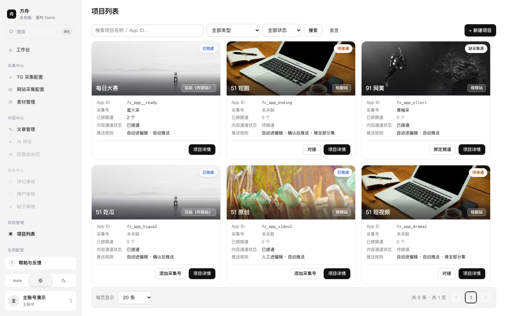
侧栏进入「项目列表」。列表只展示业务项目（不含公共采集池）。 每张卡片展示封面、名称、站点类型、状态，以及采集 / 对接相关摘要；底部操作为整组右对齐：左侧为按状态出现的次要入口（白底），右侧固定「项目详情」（黑底主按钮）。
工具栏自左至右：搜索框（项目名称 / App ID）→ 站点类型 → 项目状态 →「搜索」→「重置」→ 最右「+ 新建项目」（有创建权限时显示，黑系新建按钮）。 搜索词仅在点击「搜索」或搜索框回车后生效；类型、状态变更后即时刷新列表。重置清空搜索与筛选并刷新列表，Toast「已重置筛选」。
project-setup?new=1）。读取当前账号可见的业务项目列表；筛选在前端或接口侧按名称、App ID、类型、状态过滤。公共采集池不出现在本列表。
FZ-P-02
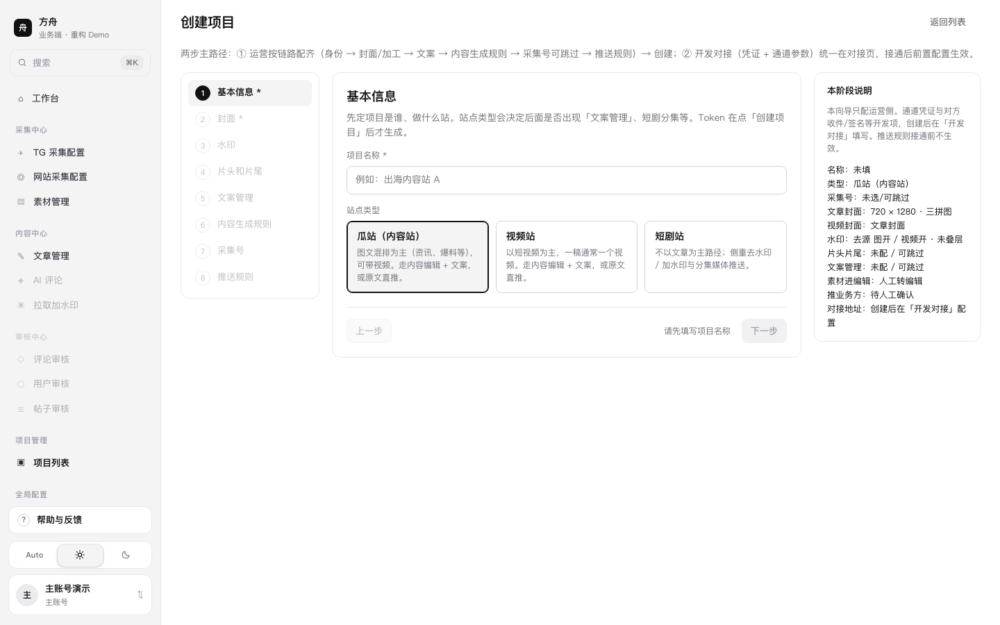
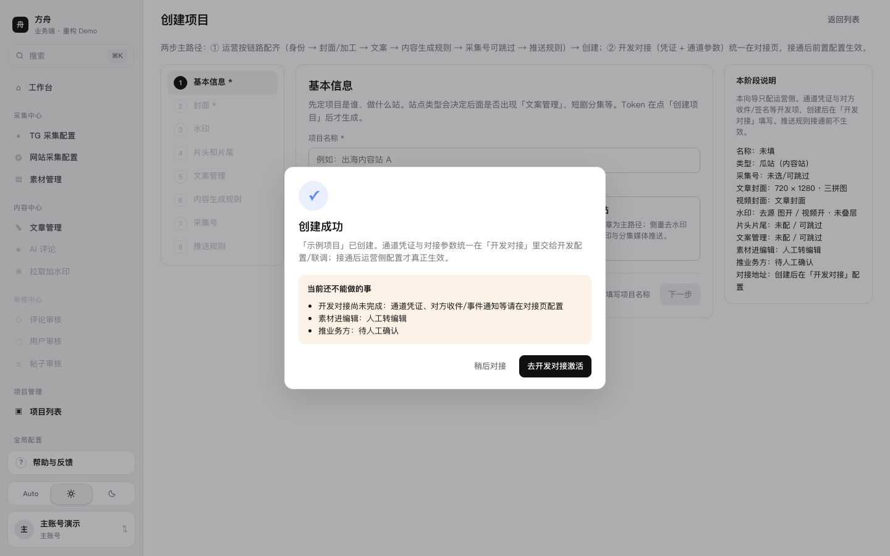
新建项目为分步向导。侧栏步骤按顺序推进：不可跳到尚未到达的步骤；已走过的步骤可点回查看/修改。 有系统默认值的步骤（水印、内容生成规则、推送规则）不提供「跳过」，用户确认后点「下一步」或末步「创建」。 真正可选步骤（片头和片尾、文案管理、采集号）未填时，「下一步」不可用，只能「跳过」进入下一步。
默认步骤顺序：基本信息 → 封面 → 水印 → 片头和片尾 → 文案管理 → 内容生成规则 → 采集号 → 推送规则。 站点类型为短剧站时，步骤中不出现「文案管理」。切换类型时按类型默认规则刷新后续默认配置，并调整步骤列表。
创建成功：Toast「项目创建成功」，并弹出成功说明（当前还不能做的事：如开发对接未完成、自动转入/推送是否接通后才生效等），主 CTA 引导去开发对接或回列表。
向导过程维护项目草稿；点「创建」写入项目主数据及各步已确认的配置，状态初始为待接通（或与现网对齐的等价态）。 成功后可进入开发对接页携带新项目 id。
FZ-P-03
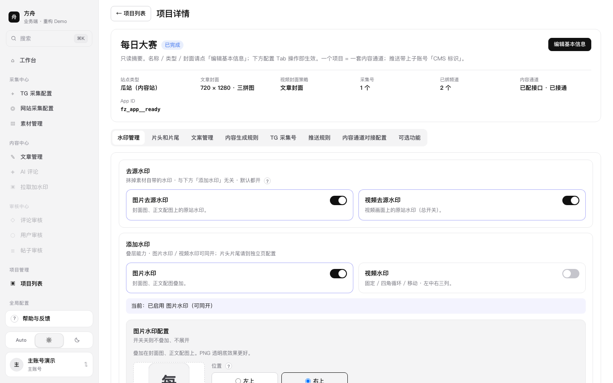
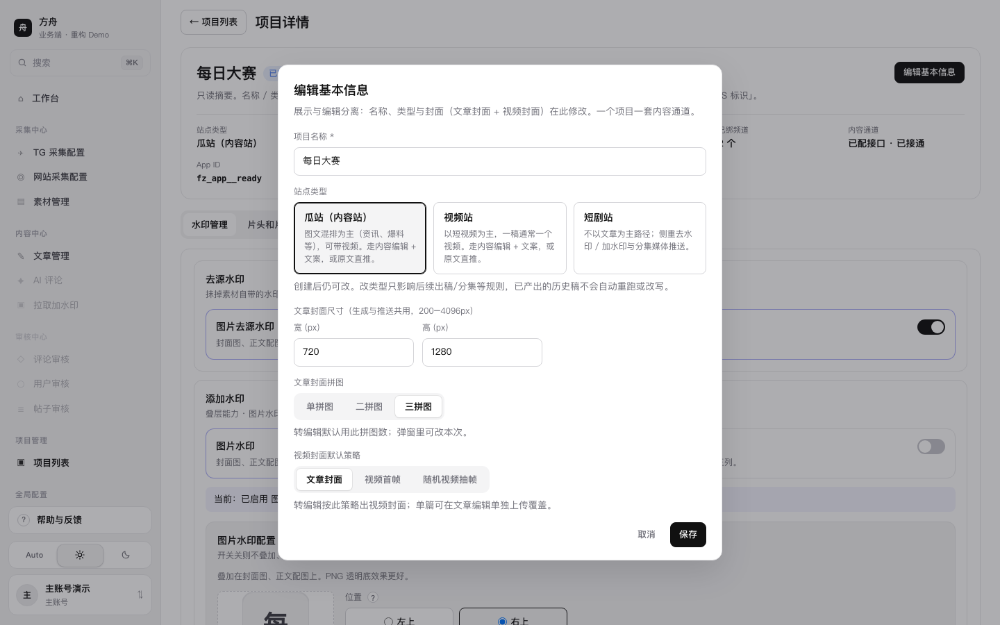
项目详情页顶部为只读摘要：项目名称与状态同排；说明文案提示名称 / 类型 / 封面经「编辑基本信息」修改，下方 Tab 操作即生效。 摘要字段区展示：站点类型、文章封面（宽×高 · 拼图块数）、视频封面策略、采集号个数、已绑频道数、内容通道状态摘要、App ID（等宽展示）。
「编辑基本信息」打开弹层，修改名称、站点类型、封面宽高、拼图块数、视频封面策略；保存后关闭弹层并刷新摘要。 摘要操作区整组右对齐：右侧固定黑底「编辑基本信息」；左侧按项目状态 / 采集完备度展示白底次要按钮，规则与列表卡片左侧入口一致（见下表），状态标签与按钮必须成对对应，不可只写「待接通才有对接」而漏掉缺采集源等态。
tab=channel）。读取项目主数据渲染摘要；编辑弹层提交后更新主数据字段并回写详情。类型变更可触发配置默认值与 Tab 显隐重算。
FZ-P-04
摘要下方为配置 Tab，顺序为：水印管理 → 片头和片尾 → 文案管理 → 内容生成规则 → TG 采集号 → 推送规则 → 内容通道对接配置 → 可选功能。 短剧站不展示「文案管理」；若 URL 指向已隐藏 Tab，自动落到可见的第一个 Tab。
各 Tab 内控件变更后即时写入项目配置（操作即生效），页面不提供底部总「保存」按钮；成功以 Toast 反馈（如「水印已更新」「推送规则已更新」）。 文本类输入采用短防抖写入，避免整页重绘导致输入失焦；上传 / 增删等需刷新 UI 的操作可整区重绘。
tab=watermark）记住，切换 Tab 用 replaceState 更新，不堆历史。各 Tab 读写同一项目配置对象的对应字段；细则见 FZ-P-05～12。
FZ-P-05
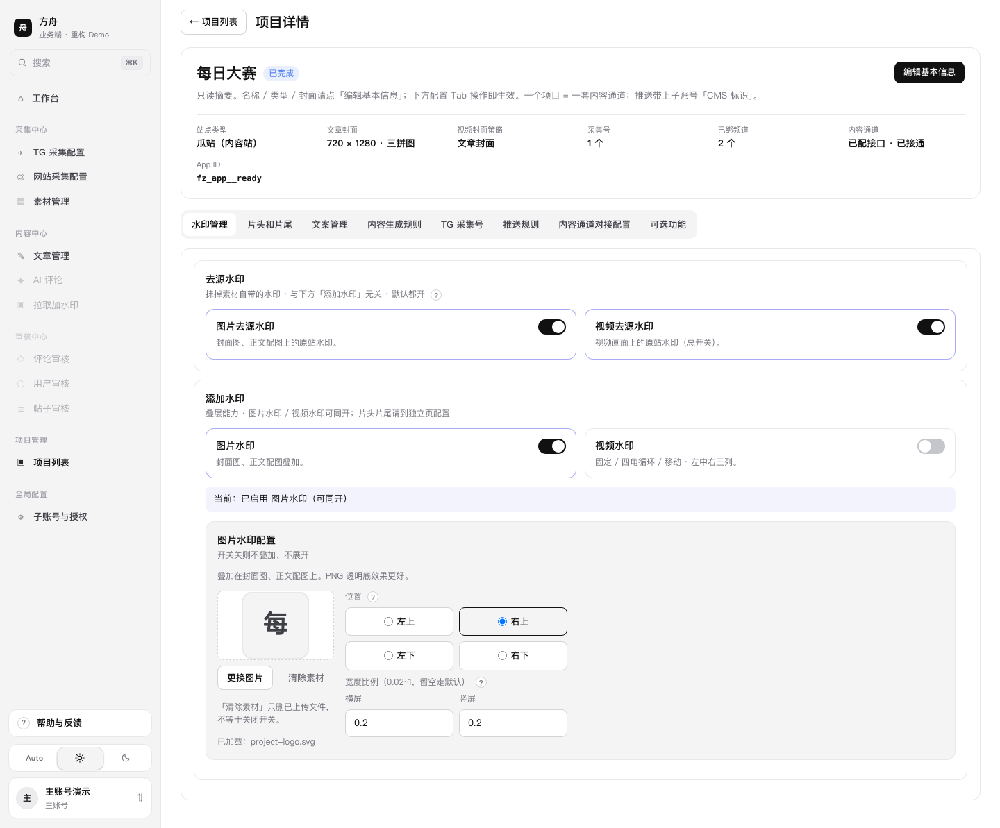
本 Tab 分两块：上方「去源水印」（抹掉素材自带水印），下方「添加水印」（叠层叠加）。两块彼此独立；片头片尾不在本 Tab。
去源水印：本期新增图片去源水印、视频去源水印各一个总开关。开 = 去源水印；关 = 保留原站水印。本期不区分视频移动 / 固定细项，开关写入后与兼容字段对齐。
添加水印：图片水印与视频水印可同开。图片水印作用于封面图、正文配图；视频水印含三列模式——固定水印、四角循环、移动水印，可多选同开，至少保留一种已启用模式。 各槽位支持上传 / 移除素材、位置、横竖屏宽度比例，以及反转显示、间歇显示等特效（按槽位能力展示）。
读写项目 watermarks（各槽素材与位置比例特效）以及 dewatermarkImage / dewatermarkVideo（及兼容字段）。
流水线在媒体加工阶段按项目配置执行去源与叠层；与片头片尾拼接顺序由媒体管线约定（叠层 vs 整段拼接）。
FZ-P-06
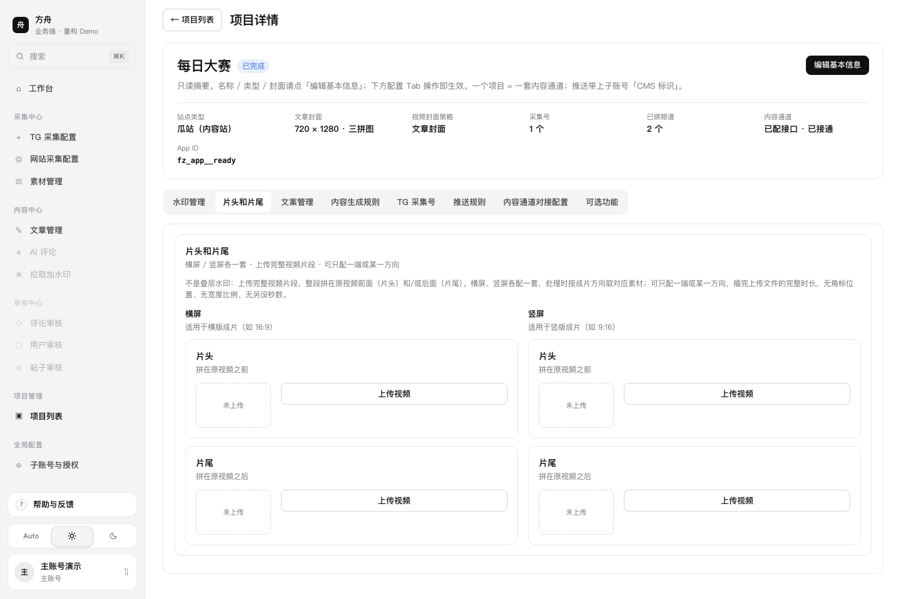
上传完整视频片段，整段拼在原视频前面（片头）和 / 或后面（片尾）。不是角标叠层，无位置、无宽度比例、无另设秒数；播完上传文件的完整时长。
横屏、竖屏各配一套；处理成片时按方向取对应素材。可只配片头、只配片尾，或只配某一方向。
写入 watermarks.introOutro 下 landscape / portrait 的 intro、outro。媒体加工按成片方向取对应片段拼接。
FZ-P-07
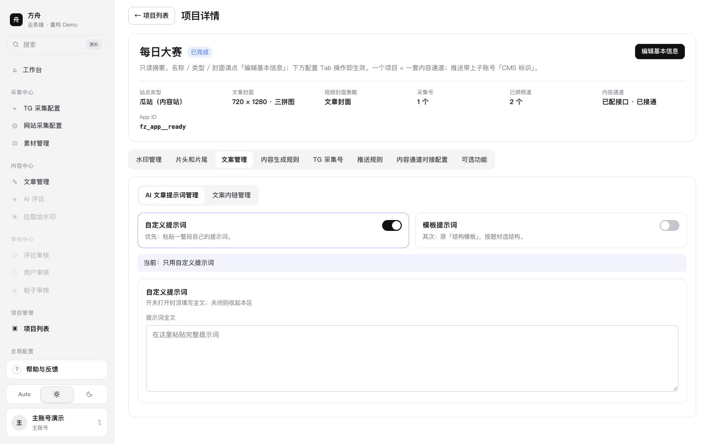
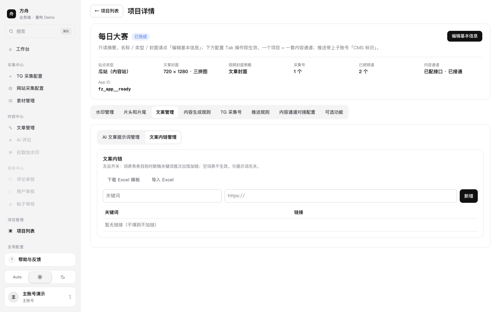
仅瓜站 / 视频站展示本 Tab。内含两个子区：「AI 文章提示词管理」「文案内链管理」。 出稿去内容通道时，瓜站 / 视频站走内容编辑 + AI（提示词与内链来自本 Tab），再提交或自动推送；去 TG 分发不经文章 AI（见推送 / 分发口径）。
本期新增提示词以自定义为先：自定义提示词排在模板提示词前面，进入后优先配置自定义。可同时打开，模板作为其次。流程说明区展示当前生效优先级。 自定义打开时须填写提示词全文；模板打开时至少勾选一套结构模板。篇幅与改写预设为进阶折叠区。
文案内链：无总开关；词表有条目则对新稿关键词首次出现加链；空词表不生效。与提示词配置无关。支持逐条新增、删除，以及下载 Excel 模板 / 导入 Excel。
tab=article 的 URL：自动切到可见 Tab，不展示文案面板。
读写项目 article（customOn / customText / templateOn / templates / 篇幅字段 / presets / links）。
AI 生成文章时读取提示词；出稿加链时读取 links。短剧站不读写本配置。
FZ-P-08
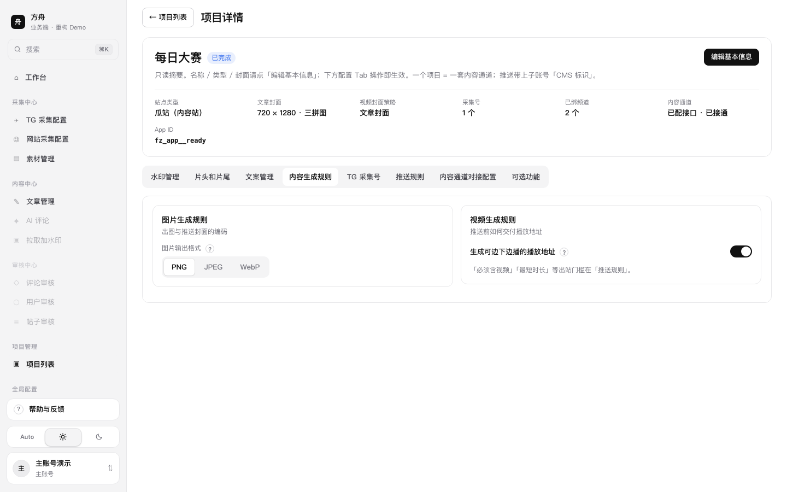
左右分栏。左「图片生成规则」：生成封面 / 配图落盘与推送时的编码格式，与是否加水印无关，常驻生效。 右「视频生成规则」：是否在推送前生成适合边下边播的播放地址（技术上 m3u8）。 「必须含视频」「最短时长」等出站门槛不在本 Tab，归「推送规则」。
出稿路径由分发去向决定，不在本页选手选「AI / 原文」：分发到 TG 走 TG 支路；分发到内容通道时瓜 / 视频走编辑 + AI，短剧主推分集媒体。
写入 imageOutputFormat、sliceEnabled。媒体生成与推送编码读取上述字段。
FZ-P-09
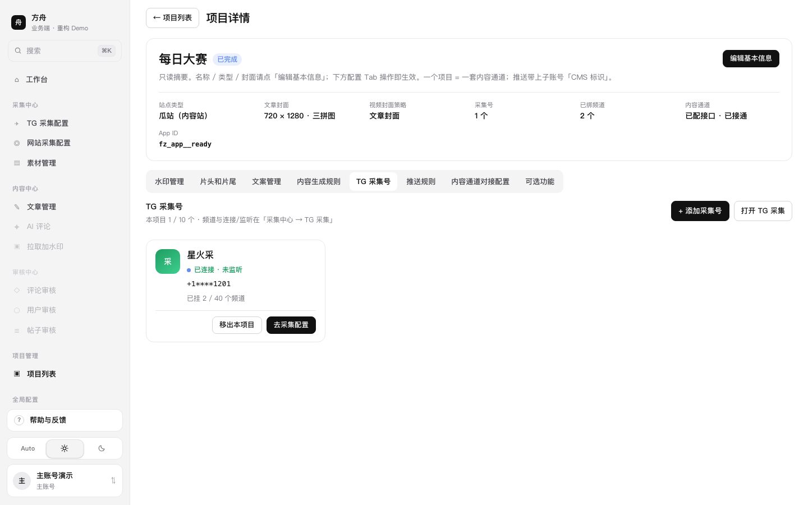
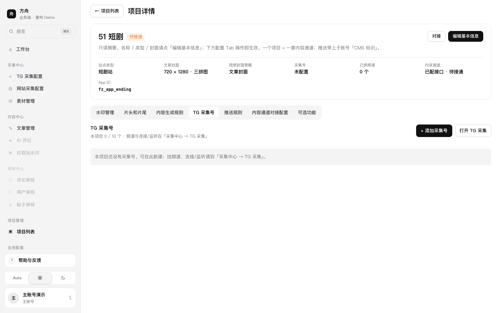
展示挂在本项目下的 TG 采集号卡片：名称、状态（含是否监听）、手机号提示、已挂频道数 / 单号频道上限。 本 Tab 负责添加采集号到本项目、从本项目移出；挂频道、连接会话、监听等操作引导至「采集中心 → TG 采集」。
采集号为账号级资产，通过关联挂到项目；频道绑定记在项目 boundChannels（含 botId）。
本 Tab 读写项目与 bot 的归属关系；频道与会话状态在 TG 采集模块维护。
FZ-P-10
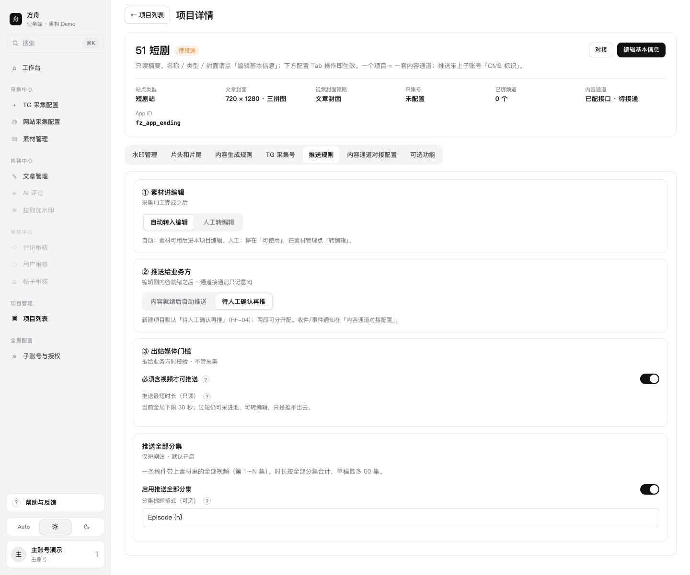
配置素材进入编辑、编辑侧推给业务方的两段闸门，以及推给业务方时的出站媒体门槛。 收件接口 / 事件通知地址在「内容通道对接配置」，不在本 Tab。 通道接通前，「自动推送」等仅记意向；接通后按已配规则生效。
Episode {'{n}'}；可改可清空。清空后推送时用源站分集名，没有则「第 N 集」。
写入 autoToEdit / autoflow、autoPush、requireVideo、minVideoSeconds（只读同步全局下限）、短剧时 pushAllEpisodes / episodeTitleFormat / maxEpisodes。
采集完成 → 编辑 → 推送流水线读取上述闸门与门槛。
FZ-P-11
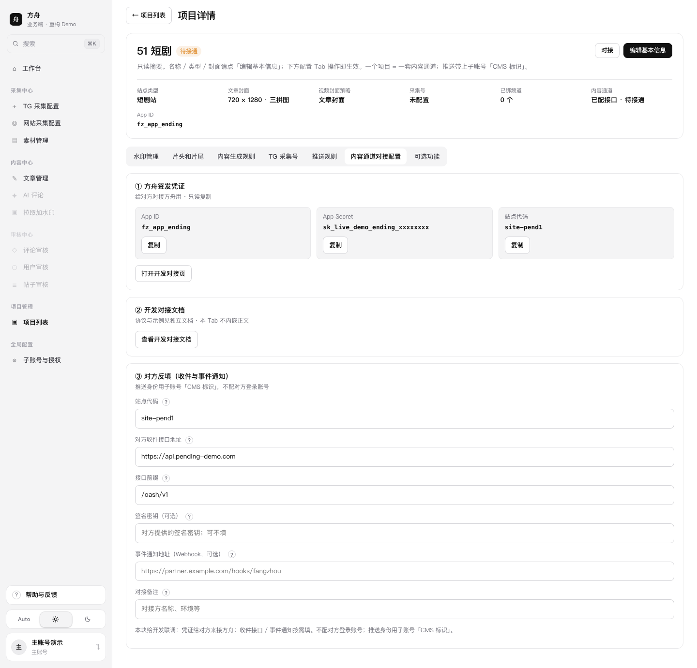
项目详情本 Tab 区块顺序与开发对接页一致：① 方舟签发凭证（App ID / App Secret）→ ② 推送签名密钥（方舟生成）→ ③ 开发对接文档链接 → ④ 对方反填（收件接口、事件通知等）。CMS 标识在账号上配置，本 Tab 不出现「默认 CMS」字段。 接口协议、鉴权示例、错误码、示例工程等不在本 Tab 展开。待接通时在凭证区另提供「打开开发对接页」。一个项目 = 一套文章内容通道；不配对方登录账号。
/oash/v1。pushSignKey）：必填、由方舟在创建项目或首次进入对接配置时自动生成。出站推送到对方收件接口时必须带签名；不提供「不配不签」。界面文案用「推送签名密钥」，禁止再叫 App Secret，也禁止与 creds.appSecret 共用同一字段名。defaultCmsId。
凭证来自项目创建时签发的 creds.appId / creds.appSecret（信封加密存储）。推送签名密钥写入 pushSignKey（同样加密存储，与 App Secret 分字段）。反填侧写入 siteCode、apiBaseUrl、apiPrefix、webhookUrl、channelNotes。禁止再用 appSecret 表示推送签名密钥。不落库 defaultCmsId。
推送与事件通知服务读取上述配置并强制签名；CMS 标识从操作账号或项目所属主账号读取。文档 URL 为环境级配置，不按项目存正文。查看 / 复制 / 轮换写入审计表。
FZ-P-12
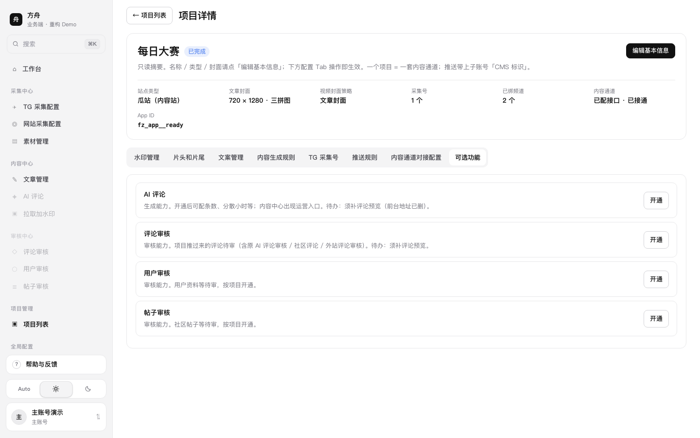
按项目展示可开通的能力包入口。每张卡片含名称、说明、右侧操作按钮（未开通显示「开通」，已标记开通显示「管理配置」及「已标记开通」标签）。
本期能力包列表：AI 评论、评论审核、用户审核、帖子审核。点击「开通」或「管理配置」后，不进入完整配置主流程，仅 Toast 说明本期仅保留开通入口（设计中）。 「AI 评论」「评论审核」正式落地时须补「评论预览」（前台地址预览入口已从项目详情移除，预览方案另定），否则能力不完整。
正式开通后写入项目 optionalPacks 标记并开通对应运营入口。本期 Demo 点击不持久化开通。
FZ-P-13
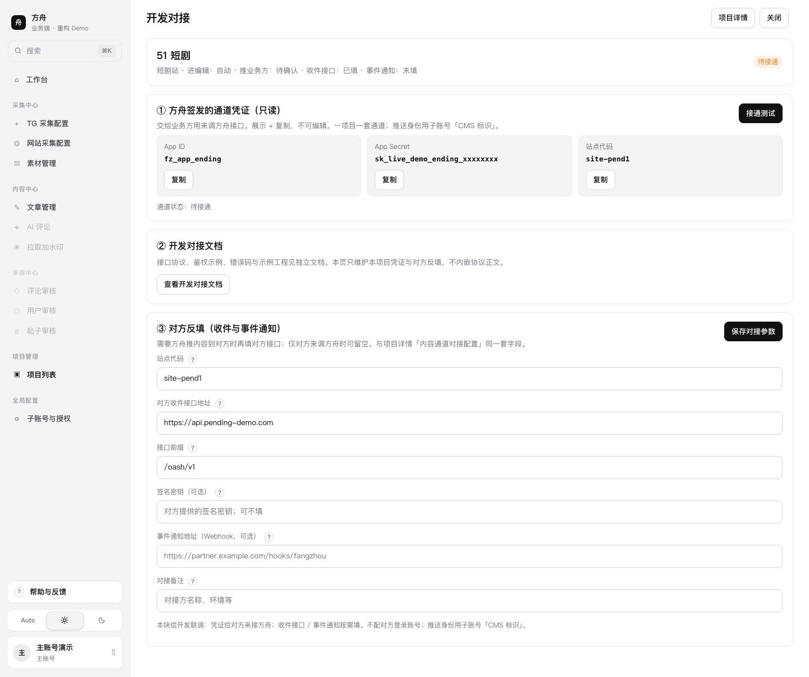
从列表「对接」、详情摘要「对接」或对接配置 Tab「打开开发对接页」进入。本页给开发联调本项目通道用；顶区为项目只读摘要后，主体区块固定顺序如下：
pushSignKey，默认打码；出站必签；查看 / 复制 / 轮换同 FZ-P-11。摘要区另展示项目名称、状态、站点类型与推送意向等只读信息。通道接通后，创建向导与详情中已配置的媒体、推送等规则按设计生效，运营一般无需因接通再重配一轮。
读项目主数据、creds、pushSignKey 与反填字段渲染本页；保存反填写回同一项目配置（与 FZ-P-11 共享）。
接通测试两步都成功后写入接通时间与调用日志，列表与详情摘要同步为已完成（或等价文案）；已配媒体 / 推送 / 反填不因接通清空。
| 功能ID | 验收标准 | 通过 |
|---|---|---|
| FZ-P-01 | 工具栏顺序正确；状态筛选含缺采集源；卡片左侧按态出现对接 / 添加采集号 / 绑定频道；操作整组右对齐；含翻页与空态。 | ☐ |
| FZ-P-02 | 向导步骤与短剧隐藏文案步正确；默认可跳过规则正确；离开创建流程须二次确认（文案与按钮符合上文）；创建成功有 Toast 与成功说明；校验失败有明确 Toast。 | ☐ |
| FZ-P-03 | 详情默认只读；编辑经弹层；摘要状态与左侧次要按钮成对（待接通→对接；无采集号→添加采集号；缺频道/缺采集源→绑定频道）；类型 / 封面在基本信息编辑。 | ☐ |
| FZ-P-04 | Tab 顺序与短剧隐藏文案一致；变更即写入且有 Toast；无整页总保存；URL 记住当前 Tab。 | ☐ |
| FZ-P-05 | 去源图/视频开关可用；添加水印含图片 + 视频三模式；上传 / 移除 / 位置 / 比例可演示；特效字段可改并写入。 | ☐ |
| FZ-P-06 | 横竖屏片头片尾四槽可上传 / 清除；非叠层说明成立；无位置比例控件。 | ☐ |
| FZ-P-07 | 非短剧可见文案 Tab；自定义 / 模板校验 Toast 完整；内链增删与 http 校验正确；短剧隐藏本 Tab。 | ☐ |
| FZ-P-08 | 图片格式三选一；边下边播开关可写；出站门槛不出现在本 Tab。 | ☐ |
| FZ-P-09 | 卡片展示与空态正确；添加受上限拦截；有频道不可移出并 Toast；跳转 TG 采集带项目上下文。 | ☐ |
| FZ-P-10 | 两段闸门 + 出站门槛齐全；新建默认①人工转编辑、②待人工确认再推、③必须含视频开、短剧分集开；分段单选不可空；最短时长只读。 | ☐ |
| FZ-P-11 | App Secret / 推送签名密钥默认打码；查看复制轮换须敏感操作二次验证并记审计；出站必签且密钥由方舟生成（字段 pushSignKey，不与 App Secret 同名）；无项目默认 CMS；非法 URL Toast。 |
☐ |
| FZ-P-12 | 四类入口可点；本期仅 Toast 占位、无半开通；文案含设计中说明。 | ☐ |
| FZ-P-13 | 区块①凭证→②推送签名密钥→③文档→④反填；接通测试须双向验签都通过才置已接通；禁止点一下即通；无底栏主操作、无接入方案代码块。 | ☐ |